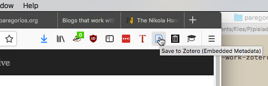

Blogs that work with Zotero
I noticed that posts on my blog don't capture smoothly into Zotero (i.e., I have to edit the records in Zotero after I capture them). So, I want to fix my theme so this is no longer a problem and then contribute that modified theme back to the Nikola community.
Step one (this post): look at some blogs and figure out which ones work well with Zotero and figure out why.
Does Zotero recognize a blog post as a blog post?
If the Zotero Connector plugin in the browser knows it is dealing with a blog post, it will display a blog post icon in the browser toolbar. But on my blog posts, Zotero shows me the more generic "web page" icon:

When I capture a reference to Zotero from such a post, I do indeed get a record that's typed as a "web page":
I see this behavior on Sean Gillies' blog too, which also looks to be running the default Nikola "Bootstrap 3" theme.
But on Ruth Kitchin Tillman's blog, we see that Zotero has figured out it's looking at a blog post:
And, as we would expect, the resulting Zotero record is auto-classified as a "blog post":
What's different?
My first thought, since the Zotero browser plugin says it's using "embedded metadata" in both cases, is to have a look at the "meta" elements in the HTML "head" in each of the posts. Leaving aside technical metadata about character set, view ports and so forth, the following differences can be noted:
- Both sites are embedding
meta@propertyterms from the Open Graph Protocol namespace (http://ogp.me/ns/#), including its "article" object (http://ogp.me/ns/article#). - The only difference I see with Open Graph is that ruthtillman.com uses
property="article.section"whereas paregorios.org usesproperty="article.tag". - Ruthtillman.com also embeds
meta@nameterms conforming to the "Summary" Twitter Cards convention (creator, description, image, site, title). Paregorios.org doesn't make use of these. - Paregorios.org embeds un-namespaced
meta@name termsfor "author" and "description," but ruthtillman.com doesn't.
So, unless there's some heuristic encoded into the Zotero translator that comes to a different conclusion about these two sets of meta tags, something else must be at play. Either there's a different kind of metadata that it finds elsewhere in the posts on ruthtillman.com that it interprets as indicative of a blog post, or it notices that it's looking at WordPress output and infers "blog" from that.
Now what?
In any case, I guess it's time to go snooping around in the Zotero code to see what we can find.
Stay tuned to my Zotero tag for updates ...